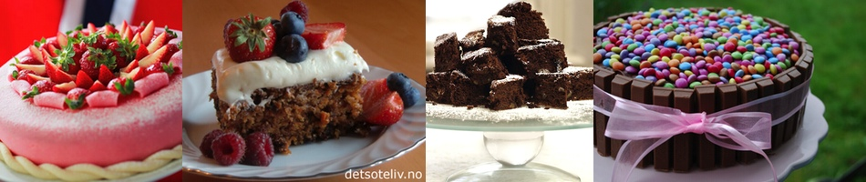

Bake kake søte
Kake er et søtt bakeverk som kombinerer en form for mel, søtingsstoff (sukker), bindestoff (egg), fettstoff (smør), smakstoff og noe som får baksten til å heve (gjær eller bakepulver). Kaken blir ofte pyntet med ulike søtsaker, frukt, nøtter, krem eller marsipan, avhengig av anledning og inspirasjon.
Bake kake søte,dyppe den i fløte,
først i sukker, så i vann, så kom det en gammel mann,
som ville smake kaka, som Marie hadde baka!
